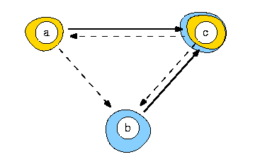

[0-100]-valued digraph
Best unique choice problematics, Kitainik's theorem
The problem, proposed by B. Roy in March 1995 at the Lausanne meeting of the EWG MCDA, concerns the construction of a unique best choice recommendation on the basis of the following pairwise outranking index (in %) delivered on three decision alternatives.
| S | a | b | c |
|---|---|---|---|
| a | - | 55 | 100 |
| b | 0 | - | 100 |
| c | 55 | 55 | - |
The example supports the fact that an associated strict median cut digraph does not necessarily deliver a unique best choice. Indeed, we obtain here two potential best choices: {a} and {c}. But the latter is conjointly a worst choice. This is the starting point for the Rubis best choice methodology.
The valued outranking graph admits two outranking kernels: {a} and {c}, and two outranked kernels: {b}, and {c}.

To make a Rubis recommendation, we must have a look at the L-qualifications of the outranking kernels.
| Choice | a | b | c | Dom. | Abs. |
|---|---|---|---|---|---|
| {a} Rubis choice | 100 | 45 | 0 | 55 | 45 |
| {c} | 45 | 45 | 55 | 55 | 100 |
| {b} | 45 | 55 | 55 | 0 | 55 |
| {c} | 0 | 0 | 100 | 55 | 100 |
Choice {a} delivers the only effective best choice recommendation.